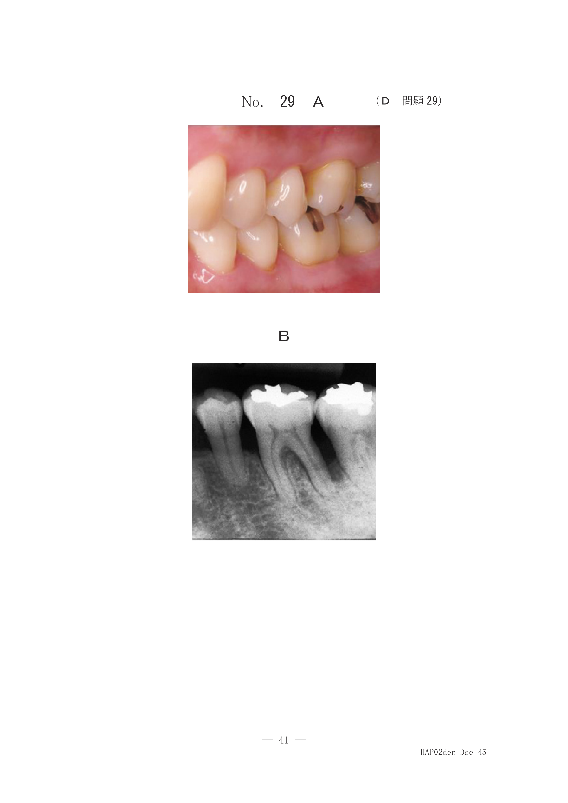
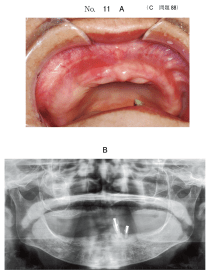
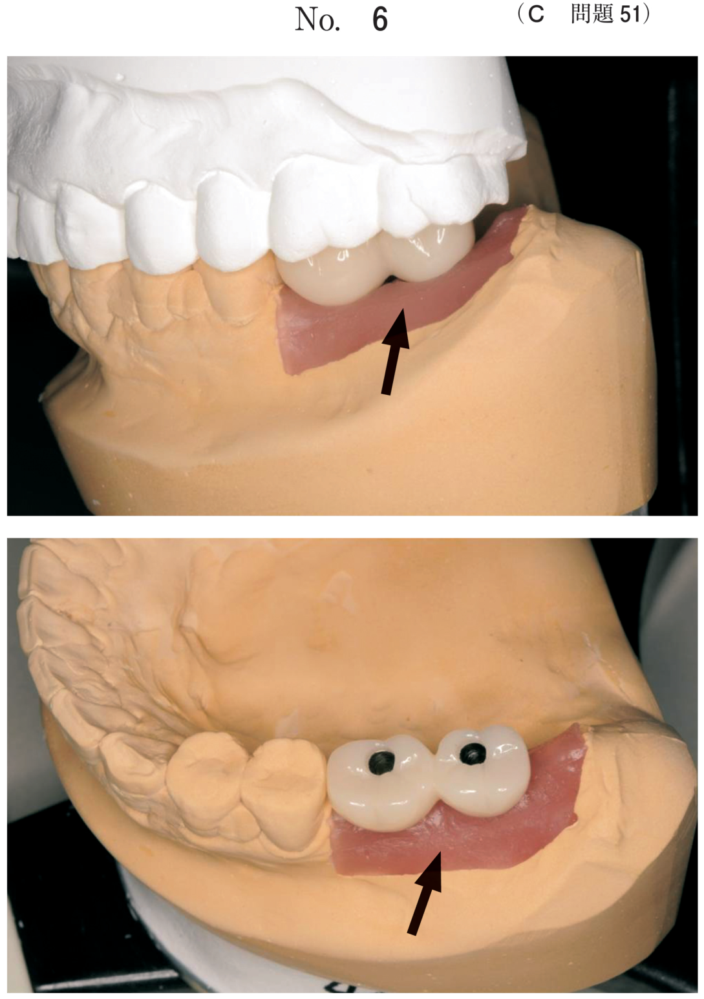
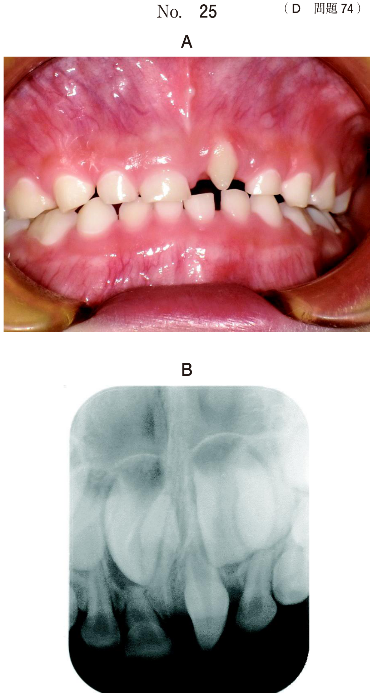
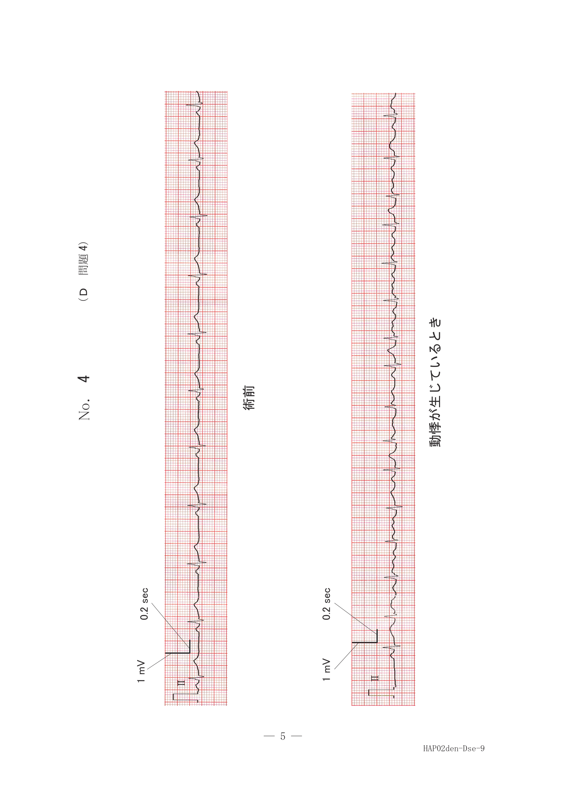
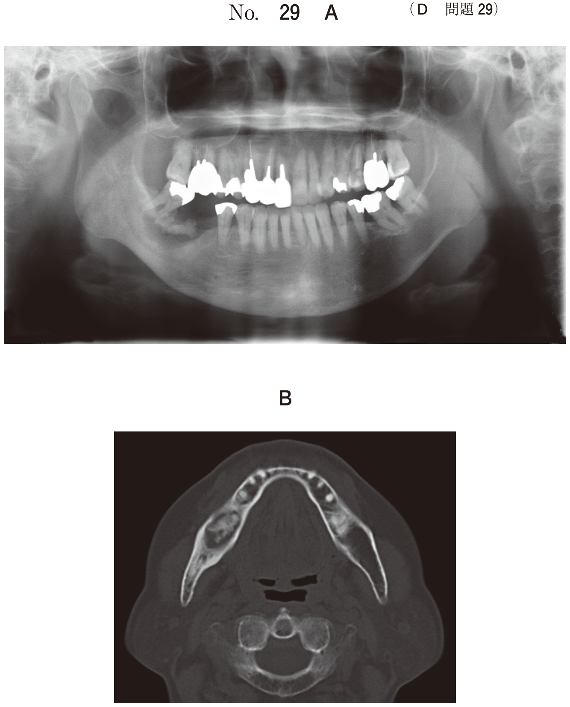
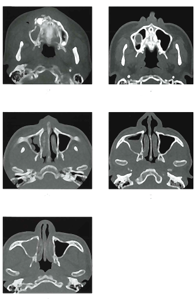

上顎洞部の病変
副鼻腔の解剖
副鼻腔の構成
副鼻腔は上顎洞、篩骨洞、前頭洞、蝶形骨洞の4つからなる。
| 副鼻腔 | 開口部 |
|---|---|
| 上顎洞・前篩骨洞・前頭洞 | 中鼻道 |
| 蝶形骨洞・後篩骨洞 | 上鼻道 |
上顎洞の排泄経路
上顎洞自然孔 → 篩骨漏斗 → 半月裂孔 → 中鼻道
洞口鼻道系（OMU）：前頭洞・前篩骨洞・上顎洞から中鼻道への粘液線毛排泄路
上顎洞の疾患
1. 炎症性疾患
| 疾患 | 原因・特徴 | 画像所見 |
|---|---|---|
| 上顎洞炎 | 自然孔閉塞により波及 | 上顎洞の不透過性亢進（混濁） |
| 真菌性副鼻腔炎 | アスペルギルスが多い、片側性 | 石灰化が特徴的 |
| 歯性上顎洞炎 | 上顎臼歯の根尖病巣が原因 | 上顎洞底の断裂、洞粘膜肥厚 |
2. 嚢胞
| 疾患 | 原因・特徴 | 画像所見 |
|---|---|---|
| 術後性上顎嚢胞 | Caldwell-Luc手術後数年〜20数年で発症 耳鼻咽喉科での外科既往がキーワード |
上顎洞の変形（狭小・化骨化） 楕円形の軟組織濃度腫瘤影 |
| 粘液貯留嚢胞 | 粘液腺の閉塞により粘液貯留 | ドーム状陰影（パノラマで明瞭） |
- 耳鼻咽喉科での外科的治療の既往がキーワード
- 頬部の無痛性腫脹
- 試験穿刺で黄色漿液性の内容物
3. 腫瘍
| 分類 | 疾患例 | 画像所見 |
|---|---|---|
| 良性腫瘍 | 骨腫、線維性異形成症 | 上顎洞底線の挙上 →歯槽部病変の可能性 |
| 悪性腫瘍 （上顎洞癌） |
扁平上皮癌が多い | 骨破壊像 上顎洞後壁破壊、頰骨歯槽稜消失 |
- 良性：皮質骨膨隆（骨を押し広げる）
- 悪性：骨破壊（骨を壊す）
過去問で確認
48歳の女性。上顎左側大臼歯部の疼痛を主訴として来院した。3か月前に同部に痛みを感じ、近医を受診して消炎処置を受けた。一時的に落ち着いたが、最近疼痛が強くなってきたという。初診時のエックス線写真（別冊No.45A）とCT（別冊No.45B）とを別に示す。
最も疑われるのはどれか。1つ選べ。


b 歯性上顎洞炎
c エナメル上皮腫
d 術後性上顎嚢胞
e 線維性異形成症
【解説】上顎臼歯部の疼痛＋根尖病巣から上顎洞への波及。上顎洞底の断裂と洞粘膜肥厚が歯性上顎洞炎の特徴的所見。
右側頰部の腫脹を主訴として来院した患者の口腔内写真（別冊No.11A）、エックス線写真（別冊No.11B）、CT（別冊No.11C）及び試験穿刺時の写真（別冊No.11D）を別に示す。
最も疑われるのはどれか。1つ選べ。


b 原始性嚢胞
c 鼻歯槽嚢胞
d エナメル上皮腫
e 術後性上顎嚢胞
【解説】頬部腫脹＋上顎洞の変形＋試験穿刺で黄色漿液性内容物。Caldwell-Luc手術後に発症する術後性上顎嚢胞を疑う。
75歳の男性。右側頬部の腫脹を主訴として来院した。3か月前に自覚したが、痛みがないためそのままにしていたという。耳鼻咽喉科で外科的治療の既往がある。右側眼窩下部から頬部にかけて無痛性の腫脹を認める。初診時のエックス線画像（別冊No.35A）とCT（別冊No.35B）を別に示す。
最も考えられるのはどれか。1つ選べ。


b 骨肉腫
c 脂肪腫
d 扁平上皮癌
e 術後性上顎嚢胞
【解説】「耳鼻咽喉科で外科的治療の既往」が決め手。無痛性腫脹も術後性上顎嚢胞の特徴。
65歳の女性。右側頰部の腫脹を主訴として来院した。6か月前に気付いたが放置していたところ、最近腫脹が増してきたという。初診時のエックス線写真（別冊No.9A）とCT（別冊No.9B）とを別に示す。
右側に認められる所見はどれか。2つ選べ。


b 眼窩底の破壊
c 上顎洞前壁の破壊
d 上顎洞後壁の破壊
e 頰骨歯槽稜の消失
【解説】悪性腫瘍（上顎洞癌）の特徴的所見は骨破壊像。上顎洞後壁の破壊と頰骨歯槽稜の消失を認める。
81歳の女性。鼻腔周囲の違和感を主訴として来院した。1年前から鼻閉感を感じていたが放置していたという。初診時のエックス線写真（別冊No.38A）とCT（別冊No.38B）を別に示す。
疾患が存在するのはどれか。1つ選べ。


b 篩骨洞
c 上顎洞
d 蝶形骨洞
e 海綿静脈洞
【解説】副鼻腔の位置関係を問う問題。上顎洞に不透過性亢進（混濁）を認める。海綿静脈洞は副鼻腔ではない点にも注意。
右側上顎洞の各種疾患のCT（別冊No.00）を別に示す。
皮質骨膨隆を認めるのはどれか。1つ選べ。

b イ
c ウ
d エ
e オ
【解説】皮質骨膨隆は良性病変の特徴（骨を押し広げる）。悪性病変では骨破壊を認める。